Front Drive Shaft (Engine Type 2AZ-FE) Reassembly |
| 1. Front Drive Shaft Bearing Installation (Drive Type FF) |
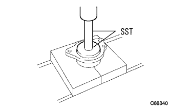 |
Using SST and a press, press a new bearing into the bearing case.
| 2. Drive Shaft Bearing Case Sub-assembly Installation (Drive Type FF) |
Secure the bearing case in a vise between aluminum plates.
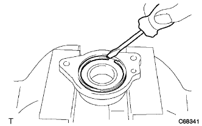 |
Using a screwdriver, install a new bearing case snap ring.
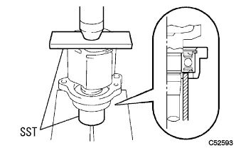 |
Using SST and a press, press the bearing case onto the inboard joint assembly RH.
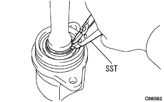 |
Using SST, install a new snap ring.
| 3. Front Drive Shaft Bearing Installation (Drive Type 4WD) |
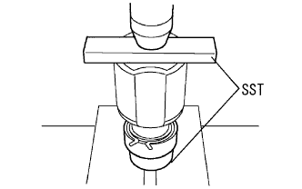 |
Pass a new bearing bracket hole snap ring over the inboard joint RH.
Using SST and a press, press a new bearing onto the inboard joint assembly RH.
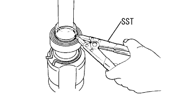 |
Using SST, install a new snap ring.
| 4. Front Drive Shaft Dust Cover Installation (Drive Type FF) |
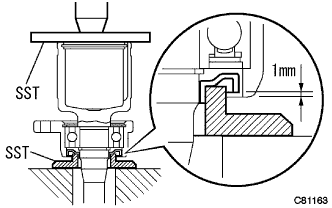 |
Using SST and a press, press in a new drive shaft dust cover to the position shown in the illustration.
| 5. Front Drive Shaft Dust Cover RH Installation (Drive Type FF) |
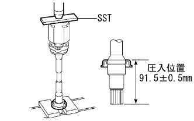 |
Using SST and a press, press in a new drive shaft dust cover RH to the standard position.
| 6. Front Drive Shaft Dust Cover RH Installation (Drive Type 4WD) |
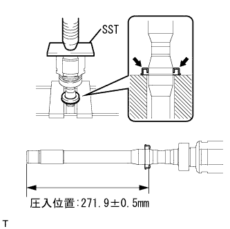 |
Using SST and a press, press in a new drive shaft dust cover RH.
| 7. Front Drive Shaft Dust Cover LH Installation |
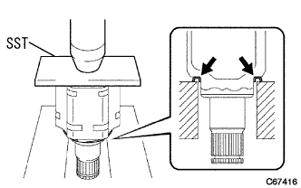 |
Using SST and a press, press in a new drive shaft dust cover LH.
| 8. Front Drive Shaft Hole Snap Ring LH Installation |
Install a new hole snap ring.
| 9. Drive Shaft Outboard Joint Boot Installation |
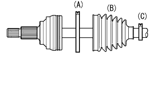 |
Wrap protective tape around the splines of the outboard joint shaft assembly.
Install the following new parts to the outboard joint shaft assembly in this order.
Outboard joint boot clamp No.2 (A in illustration)
Outboard joint boot (B in illustration)
Outboard joint boot clamp (C in illustration)
Pack grease into the joint and boot of the outboard joint shaft assembly.
Install the outboard joint boot to the groove of the outboard joint shaft assembly.
| 10. Front Axle Outboard Joint Boot Clamp LH NO.2 Installation |
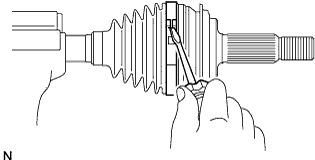 |
Install the outboard joint boot clamp No.2 to the outboard joint boot.
Using a thin-bladed screwdriver, stake the outboard joint boot clamp No.2.
| 11. Front Axle Outboard Joint Boot Clamp RH NO.2 Installation |
| 12. Front Axle Outboard Joint Boot Clamp LH Installation |
| 13. Front Axle Outboard Joint Boot Clamp RH Installation |
| 14. Front Drive Shaft Damper LH Installation |
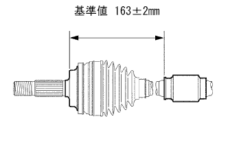 |
Install the drive shaft damper at the position shown in the illustration.
| 15. Front Drive Shaft Damper RH Installation (Drive Type 4WD) |
| 16. Front Drive Shaft Damper Clamp LH Installation |
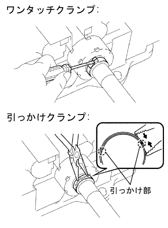 |
For one-touch clamp type
Install a new damper clamp to the drive shaft damper.
Using a thin-bladed screwdriver, stake the damper clamp.
For hook type clamp
Install a new damper clamp to the drive shaft damper.
Using needle-nose pliers, hook the projection and recess of the damper clamp together to secure it.
| 17. Front Drive Shaft Damper Clamp RH Installation (Drive Type 4WD) |
| 18. Front Drive Inboard Joint Assembly LH Installation |
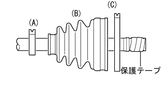 |
Install the following new parts to the outboard joint assembly in this order.
Inboard joint boot clamp (A in illustration)
Inboard joint boot (B in illustration)
Inboard joint boot clamp No.2 (C in illustration)
Secure the outboard joint shaft assembly in a vise between aluminum plates.
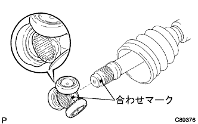 |
Align the matchmarks and install the tripod joint to the outboard joint shaft assembly.
Using a brass bar and hammer, tap in the tripod joint.
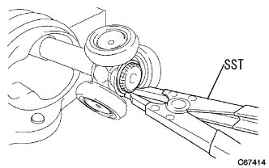 |
Using SST, install a new snap ring.
Pack grease into the inboard joint assembly LH.
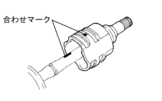 |
Align the matchmarks and install the inboard joint assembly LH to the outboard joint shaft assembly.
| 19. Front Drive Inboard Joint Assembly RH Installation |
| 20. Drive Shaft Inboard Joint Boot Installation |
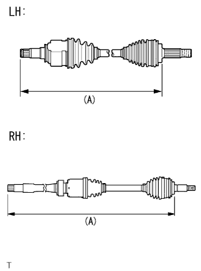 |
Install the inboard joint boot to the grooves of the inboard joint assembly and outboard joint shaft assembly.
| LH side | 567.2±5mm |
| RH side (FF) | 884±5mm |
| RH side (4WD) | 875.9±5mm |
| 21. Front Axle Inboard Joint Boot Clamp LH NO.2 Installation |
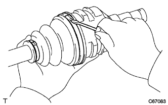 |
For one-touch clamp type
Install the inboard joint boot clamp No.2 to the inboard joint boot.
Using a thin-bladed screwdriver, stake the inboard joint clamp No.2.
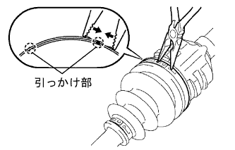 |
For hook type clamp
Install the inboard joint boot clamp No.2 to the inboard joint boot.
Using needle-nose pliers, hook the projection and recess of the inboard joint clamp No.2 together to secure it.
| 22. Front Axle Inboard Joint Boot Clamp RH NO.2 Installation |
| 23. Front Axle Inboard Joint Boot Clamp LH Installation |
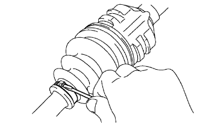 |
For one-touch clamp type
Install the inboard joint boot clamp to the inboard joint boot.
Using a thin-bladed screwdriver, stake the inboard joint clamp.
 |
For hook type clamp
Install the inboard joint boot clamp to the inboard joint boot.
Using needle-nose pliers, hook the projection and recess of the inboard joint clamp together to secure it.
| 24. Front Axle Inboard Joint Boot Clamp RH Installation |
| 25. Front Drive Shaft Assembly Inspection |
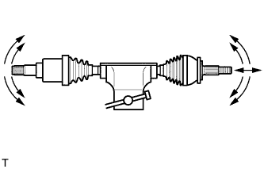 |
Check that the joints operate smoothly with no excessive play when moved up and down, left and right, and in the axial direction.
Check that the joint boots are free of cracks, damage and grease leakage.